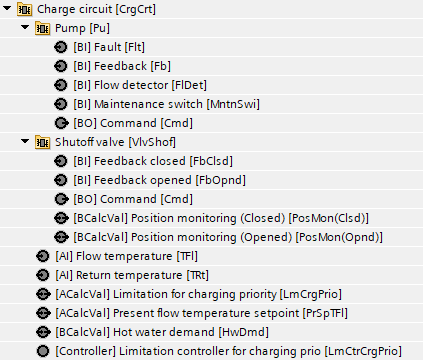
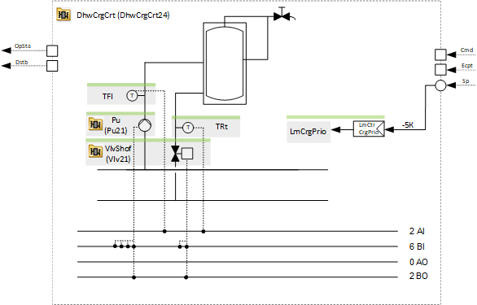
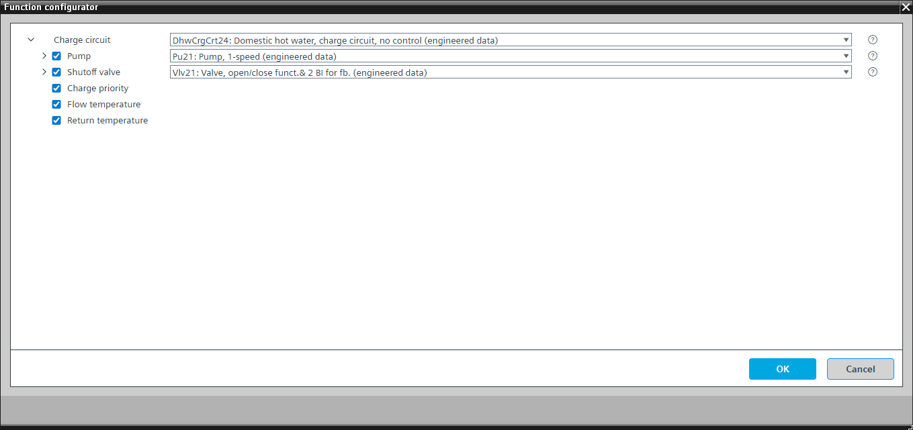

[DhwCrgCrt24] Domestic hot water, charge circuit, no control
Program block, name / node subtype: [DhwCrgCrt24] Domestic hot water, charge circuit, no control
Library hierarchy: Heating equipment
Family: DhwCrgCrt
Project tree | Diagram |
|---|---|
 |  |
Configurator


Program blocks are stored in the library without I/Os. Use the auto-create and auto-connect functions to create I/Os and/or to connect them to the interface blocks, e.g., R_A, CMD_B. Alternatively, take the I/Os from the folder containing the predefined I/Os in the library and/or from the plant and connect them to the interface blocks.
Function
The charge circuit switches on in case of demand for charging.
The optional pump switches on and the optional shutoff valve opens.
Optional functions
This program block has the following optional functions:
Option: Pump (1xBO, 4xBI)
Controls a pump (Pu21).
The pump switches on when the charge circuit is switched on.
Option: Shutoff valve (1xBO, 2xBI)
Controls a shutoff valve (Vlv21).
Delay off is defined to ensure that the pump stops first.
Option: Charge priority
Gives priority to the charge circuit when it is on and it cannot reach its setpoint by decreasing the power of parallel consumers.
A PID controller compares the reduced flow temperature setpoint, e.g., by -5 K, with the flow temperature. Its inverted output is shown on BACnet and read by other plants, e.g., heating circuits for pre-control or radiator heating.
This option can only be applied successfully together with the optional flow temperature.
Option: Flow temperature (1xAI)
Creates an analog input for the flow temperature and reads its signal.
Option: Return temperature (1xAI)
Creates an analog input for the return temperature and reads its signal.
Mandatory elements
Name | Description | Type | Alarm / Notification class | Trend / Type | |
|---|---|---|---|---|---|
HwDmd | Hot water demand | BCalcVal: Binary calculated value | No | No | |
PrSpTFl | Present flow temperature setpoint | ACalcVal: Analog calculated value | No | No | |
Optional elements
Name | Description | Type | Alarm / Notification class | Trend / Type | |
|---|---|---|---|---|---|
TFl | Flow temperature | AI: Analog input | Yes, 4 | Yes, 2 | |
VlvShof | Shutoff valve | N/A | N/A | ||
Pu | Pump | N/A | N/A | ||
TRt | Return temperature | AI: Analog input | Yes, 4 | Yes, 2 | |
Further options
Description |
|---|
Charge priority Elements that belong to this option: LmCtrCrgPrio | Limitation controller for charging priority | Ctr: Controller | N/A | N/A LmCrgPrio | Limitation for charging priority | ACalcVal: Analog calculated value | No | No |